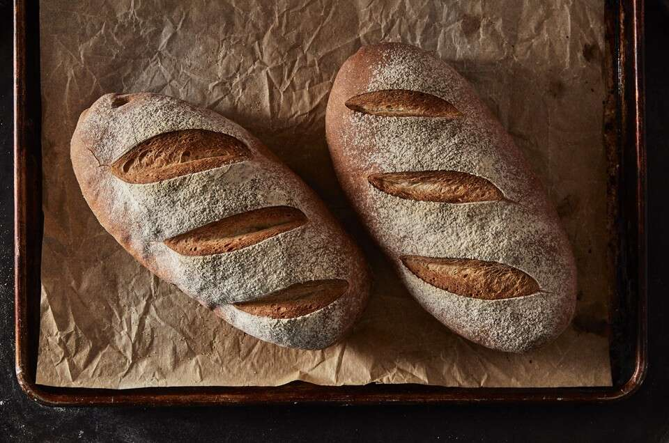

Home Made Bread For Beginners

Description
why are you here? is it because you read the back of a bread loaf at the store and realized there are more preservatives in there than Evita Peron? Or maybe the current economical climate has you feeling like a medieval peasant and so you figured you might as well eat like one as well. These questions are important, because in order to make the bread you must become the bread. I am just kidding, this bread recipe is so easy a toddler could do it in the better part of an afternoon... were it that you trusted a toddler with an oven. Regardless of your parenting style, this bread is home made, artisian, rustic, mouth watering, and most importantly EASY PEASY.
Ingredients
- 4 cups of bread flour (1/2 cup set aside for kneading)
- 1 tablespoon granulated sugar
- 2 1/4 teaspoons instant yeast (one whole packet is thats what your buying)
- 2 1/2 teaspoon salt
- 1 2/3 cups lukewarm (90-110 degrees farenheight. temperature here is important)
- yellow cornmeal (for coating the pan. DO NOT MIX IN WITH BREAD)
Steps
- Stir together all of your ingredients together in a large-ish sized mixing bowl. Preferably, mix together the dry before you mix wet. Use a sturdy spoon to start the mixing process, and don't forget to temperature check your water before adding it in. 90-110 degrees for reference. mix until you get a shaggy mass of dough.
- Turn the dough out onto a floured surface, I use a large cutting board. Use that 1/2 cup of flour we set aside earlier and knead it in. It's okay to use more of less than what we set aside. fold the dough repeatedly and really beat the hell out of it for about 6 or 7 minutes. The dough should become bouncy and smooth, a little rough is okay, but really go for gold here.
- Place dough in a large bowl that has been lightly greased. I used the same bowl I used for mixing, but wash it thoroughly beforehand. Cover the bowl with plastic wrap (or any eco friendly alternative that will create an airtight cover). Go ahead and set a timer for about 2 hours to let the dough rise. make sure to place the bowl somwhere warm if your kitchen is pretty cold. A turned off oven will work in a pinch, just turn on the light for some warmth. Generally though, room temperature is fine.
- Gently deflate the dough and cut in half. pat each half into a rough 6 by 8 oval. Roll that puppy up with the short side center until it looks like a log. Go ahead and place each loaf seam down on cookie sheet or baking pan. Make sure to dust the pan wil cornmeal first to create a great crust on your bread. cover them up with the plastic wrap from earlier and walk away for 45 minutes.
- Once your loaves have risen, go ahead and place in the oven at 450 for 20 to 25 minutes. make sure you take the plastic wrap off first, and go ahead and dust them with some flour for aesthetics before sending them in.